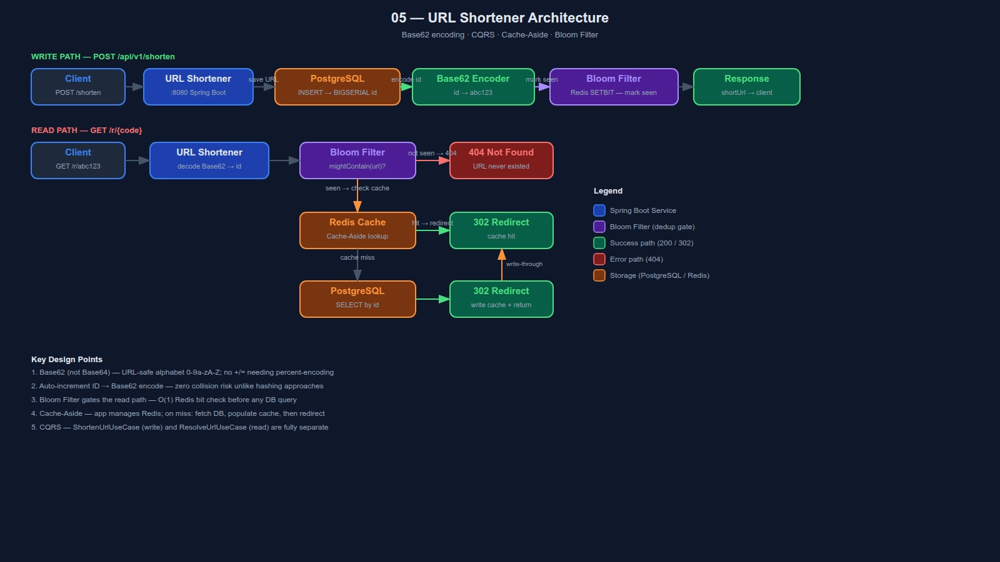

Base62 · CQRS · Cache-Aside · Bloom Filter
Given a long URL, produce a short alias. When visited, redirect to the original.
Read traffic dominates write traffic 100:1. Every design decision flows from this asymmetry.
+ or /)POST /api/v1/shorten → returns short codeGET /r/{code} → 302 redirect to originalAlphabet: 0-9 a-z A-Z — 62 characters, all URL-safe.
Why not Base64? Base64 adds + and / — special characters in URLs. Require percent-encoding, making short codes ugly and fragile.
| Hash URL | Auto-increment ID | |
|---|---|---|
| Collision | Possible | Never |
| Extra DB check | Every write | None |
| Complexity | O(1) + retry loop | O(1) always |
ALPHABET = "0123456789abcdefghijklmnopqrstuvwxyzABCDEFGHIJKLMNOPQRSTUVWXYZ"
encode(id):
while id > 0:
result.prepend(ALPHABET[id % 62])
id = id / 62
decode(code):
for each char in code:
result = result * 62 + ALPHABET.indexOf(char)
Examples:
ID = 1 → "1"
ID = 62 → "10"
ID = 125000 → "W0s"
62⁶ = 56 billion URLs in 6 chars max
Key insight: shortCode is never stored in DB. Derived from ID at runtime in both directions.
Probabilistic bit array. Answers: "does this code exist?"
Without Bloom Filter: random code enumeration forces a DB query per miss. With it: definite misses absorbed at O(k) in memory — never reach Redis or PostgreSQL.
Redis SETBIT / GETBIT — 3 hash functions, 10M bit array ≈ 1.2MB. Persistent across restarts. Shared across instances.
Two completely separate paths. Write side persists. Read side queries. Never mixed.
Application manages cache explicitly. Cache sits beside the DB, not in front of it transparently.
GET url:{code} → value foundcode → id via Base62301 is cached permanently by browsers. If we ever update or delete a link, the old redirect is stuck in every browser cache forever. 302 re-checks every time.
// ResolveUrlUseCase — Cache-Aside logic
public String resolve(String code) {
// Bloom Filter gate
if (!bloomFilter.mightContain(code)) {
throw new UrlNotFoundException(code);
}
String cacheKey = "url:" + code;
// Cache-Aside: check cache first
return cache.get(cacheKey)
.orElseGet(() -> {
// Cache MISS: decode → DB lookup
long id = encoder.decode(code);
Url url = urlRepository.findById(id)
.orElseThrow(() ->
new UrlNotFoundException(code));
// Populate cache for next request
cache.put(cacheKey, url.originalUrl());
return url.originalUrl();
});
}
Dependencies always point inward. Domain knows nothing about Spring, Redis, or JPA.
| MVC name | Hexagonal name |
|---|---|
| @RestController | Controller in api/ |
| @Service | UseCase in application/ |
| @Repository (interface) | Port in domain/ |
| @Repository (impl) | Adapter in infrastructure/ |
| @Entity | JPA entity in infrastructure/ |
One class, one action. ShortenUrlUseCase has one method. No fat service with 10 mixed responsibilities. Easier to test, easier to find bugs.
| Decision | Choice | Why |
|---|---|---|
| ID strategy | BIGSERIAL auto-increment | No collision; encode/decode via Base62 at runtime |
| ShortCode in DB? | No — derived | Saves column + index; computed from ID deterministically |
| Bloom Filter backend | Redis SETBIT/GETBIT | Persistent across restarts; shared across instances; 1.2MB |
| Cache strategy | Cache-Aside | App controls cache explicitly; simple to reason about |
| Cache TTL | 24 hours | Balance between Redis memory and DB hit rate |
| Redirect code | 302 Found | 301 cached permanently by browsers — dangerous for mutable links |
| Encoding alphabet | Base62 (0-9a-zA-Z) | URL-safe; no percent-encoding needed |
docker-compose up -d
JAVA_HOME=/usr/lib/jvm/java-21-openjdk-amd64 \ mvn test -f backend/pom.xml
JAVA_HOME=/usr/lib/jvm/java-21-openjdk-amd64 \ mvn spring-boot:run \ -f backend/pom.xml \ -pl url-shortener-service
# Shorten a URL
curl -X POST http://localhost:8080/api/v1/shorten \
-H "Content-Type: application/json" \
-d '{"originalUrl":"https://www.google.com"}'
# Response:
# { "shortCode": "1", "shortUrl": "http://localhost:8080/r/1" }
# Resolve (follow the redirect)
curl -L http://localhost:8080/r/1
# Swagger UI
open http://localhost:8080/swagger-ui.html
Full system view — components, data flows, and design decisions
